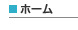
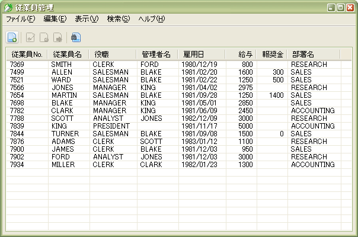

|
 |
|||||
|  | ||||||
リッチクライアントアプリケーション・フレームワーク S2JFace概要S2JFaceは、XML定義によるGUIの表示(SWT/JFaceを使用)と、GUIとSeasar2上のコンポーネントとの連携を実現するリッチクライアントアプリケーションフレームワークです。S2JFaceを利用することで、リッチクライアントアプリケーションが効率的に開発できるようになります。 まずは、S2JFaceを利用したサンプルアプリケーションをダウンロードして、実行してみてください。実行方法は簡単！ダウンロードしたファイルを展開し、run.bat をダブルクリックするだけです。 以下のような画面が表示されたでしょうか？

これはWebアプリケーションフレームワーク・S2JSFのサンプルアプリケーションとして収録されている Employee-ManagementをS2JFaceの機能を使ってGUIアプリケーションとして作成したものです。 S2JFaceでは、このようなGUIアプリケーションを簡単に作成することができます。S2JFace では、Seasar2 による Web アプリケーションのアーキテクチャ(Goya) をできるかぎり踏襲しているため、Seasar2 による Web アプリケーション開発に慣れた方ならば、より簡単に GUI アプリケーションを作成することができます。 (事実、ここで紹介しているサンプルアプリケーションも、Logic層、Dao層は Employee-Managementとほとんど同じ作りになっています。) もちろん、S2Daoも今まで通り利用できるため、データベースを利用するアプリケーションも簡単に作成できます！ また、S2JFace で表現できる GUI コンポーネントは、こちら から見ることができます。 現段階で、数多くのコンポーネント表示に対応しています。 ドキュメント
メーリングリストS2JFaceの開発者用メーリングリストを開設しました！ 今後の仕様検討は、このメーリングリストを中心として行っていく予定です。 メーリングリストは、S2JFaceに興味のある方なら、どなたでも参加することができます。仕様に関する要望などもメーリングリスト上で受け付けますので、ぜひご参加ください！ コミッタのブログS2JFaceは、コミッタのブログを中心として仕様検討を進めています。 トラッキングシステムS2JFaceの機能追加については、seasar.org の提供するトラッキングシステムを利用して管理しています。 SubversionリポジトリS2JFaceのソースコードは、seasar.org のSubversionリポジトリで公開されています。 どなたでもアクセスしてソースコードを閲覧することができます。 (以下のリンクをクリックするとWeb経由でもソースコードを閲覧できます)
ダウンロード |
||
| Copyright© 2004-2006, The Seasar Foundation and the others. All rights reserved. |